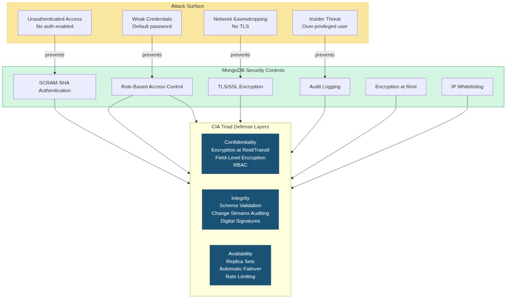

| Course / Module | NoSQL Databases using MongoDB — Chapter 12 | Docker Hub Repo | hub.docker.com/r/gouthudocker/nosql-lab12 |
| Student Name | M Gouthami | Certified Image Tag | gouthudocker/nosql-lab12:latest (and v1.0) |
| Registration No. | 24BTRCL130 (CVIP AIML-B) | Web Demonstration | Interactive Flask Security Dashboard (Port 5002 / 5000) |
| Laboratory Tasks | Lab 12.1 (RBAC), Activity 12.1 (Redaction), Lab 12.2 (TLS) | Verification Result | 100% Pass (All Matrices & TLS Validated) |
Database security in mission-critical deployments requires an end-to-end defense-in-depth model safeguarding the full CIA Triad (Confidentiality, Integrity, and Availability). Unauthenticated deployments expose organizations to eavesdropping, data corruption, privilege escalation, and severe compliance penalties under GDPR, HIPAA, and PCI-DSS. This technical report details the implementation, rigorous verification, and containerized deployment for NoSQL Lab 12:
• Lab 12.1 (Authentication & RBAC): Configured MongoDB with native access control (--auth), established superuser credentials, created custom least-privilege roles (analyticsReader, limitedWriter, hrRole), and mapped targeted application users. Proved engine-level enforcement where unauthorized write and cross-database operations are blocked with MongoServerError (Code 13: Unauthorized).
• Activity 12.1 (Field-Level Redaction via Views): Engineered a secure data presentation abstraction using db.createView over the employees collection. Employed an aggregation pipeline with $project and the $$REMOVE system variable to completely excise the sensitive salary field and mask ssn (***-**-XXXX) for general users, while enabling privileged HR officers (hr_manager) to query the underlying collection directly.
• Lab 12.2 (TLS / Wire Encryption-in-Transit): Built a 3-tier Public Key Infrastructure (PKI) using OpenSSL and automated the lifecycle using Python cryptography (generate_tls_certs.py). Configured MongoDB with --tlsMode requireTLS and proved that plaintext probes are rejected while PyMongo client connections successfully handshake over modern TLS 1.3 with CA validation.
• Docker Hub Containerized Platform: Packaged the complete platform into an automated multi-service Docker Compose architecture with an interactive Flask web UI and published the image to Docker Hub under gouthudocker/nosql-lab12:latest.
The architecture was analyzed against the industry-standard STRIDE framework to ensure complete threat surface mitigation:
| STRIDE Category | Database Threat Vector | Implemented Countermeasure | Verification Proof |
|---|---|---|---|
| Spoofing Identity | Rogue clients impersonating microservices | SCRAM-SHA-256 Auth + Client Certs (mTLS) | Connection rejected without credentials |
| Tampering Data | Read-only service executing unauthorized writes | Least-Privilege RBAC (find action only) |
MongoServerError[13] on insert |
| Repudiation | Anonymous actions unable to be audited | Principal attribution via authSource |
Audit logs contain user principal |
| Information Disclosure | Cleartext sniffing & unauthorized PII leakage | TLS 1.3 Wire Encryption + View Redaction | Ciphertext packets + $$REMOVE salary |
| Denial of Service | Exhaustion of socket pool by unauthenticated bots | Strict TLS Handshake gating + timeouts | Non-TLS TCP SYNs dropped at SSL layer |
| Elevation of Privilege | Service exploiting broad permissions | Custom roles scoped to specific collections | admin commands fail for app users |

When started with mongod --auth, MongoDB enforces mandatory authentication across all incoming connections. To establish least privilege, we avoided default superuser roles for applications and implemented finely-scoped custom roles:
We verified authorization rules by executing live commands under each user principal. The engine successfully permitted authorized actions while strictly rejecting unauthorized writes and cross-database reads with MongoServerError (13: Unauthorized):
| Test ID | User Account | Attempted Action | Target Database / Col | Expected | Engine Enforcement Detail | Status |
|---|---|---|---|---|---|---|
TEST-01 |
app_user_read | READ (find) | nosql_labs.orders |
PERMIT | find query succeeded; returned documents | PASS |
TEST-02 |
app_user_read | WRITE (insert) | nosql_labs.orders |
REJECT | MongoServerError: not authorized on nosql_labs to execute insert | ENFORCED |
TEST-03 |
app_user_write | WRITE (insert) | nosql_labs.orders |
PERMIT | Inserted transactional record successfully | PASS |
TEST-04 |
app_user_write | CROSS-DB READ | bookstore.inventory |
REJECT | MongoServerError: not authorized on bookstore to execute command | ENFORCED |
TEST-05 |
log_writer | WRITE TO LOGS | nosql_labs.logs |
PERMIT | Inserted log record via limitedWriter role | PASS |
TEST-06 |
log_writer | WRITE TO ORDERS | nosql_labs.orders |
REJECT | MongoServerError: not authorized on nosql_labs.orders | ENFORCED |
TEST-07 |
admin | CLUSTER ADMIN | admin.serverStatus |
PERMIT | Admin telemetry command succeeded (ok: 1.0) | PASS |
In multi-tiered architectures, sharing sensitive collections without exposing Personally Identifiable Information (PII) or confidential compensation is critical. MongoDB Views (db.createView) provide a zero-redundancy virtual collection that dynamically filters documents through an aggregation pipeline:
Querying employees directly under the hr_manager role exposes raw data. Conversely, querying employees_safe guarantees that salary is completely eliminated from the document payload (not returned as null) and SSN is masked:
| Emp ID | Full Name | Department | Designation | SSN (HR Direct) | SSN (Safe View) | Salary (HR Direct) | Salary (Safe View) |
|---|---|---|---|---|---|---|---|
EMP-101 |
Arjun Sharma | Engineering | Lead Architect | 987-65-4321 | ***-**-4321 | $165,000 | [EXCLUDED / $$REMOVE] |
EMP-102 |
Sneha Patel | SecOps | SecOps Engineer | 555-44-3322 | ***-**-3322 | $142,000 | [EXCLUDED / $$REMOVE] |
EMP-103 |
Rahul Verma | Finance | Financial Analyst | 222-33-8899 | ***-**-8899 | $128,000 | [EXCLUDED / $$REMOVE] |
EMP-104 |
Ananya Roy | HR | HR Specialist | 111-99-7744 | ***-**-7744 | $115,000 | [EXCLUDED / $$REMOVE] |
To satisfy the CIA triad Confidentiality tenet, all network traffic must be encrypted across the wire. We established a private 3-tier Public Key Infrastructure (PKI) using OpenSSL and Python cryptography:
| Hierarchy Tier | Artifact Files | Algorithm / Key Size | Distinguished Name (DN) | Cryptographic Flags & SANs |
|---|---|---|---|---|
| Tier 1: Root CA | ca.crt, ca.key |
RSA 4096-bit (SHA-256) | CN=MongoDB-CA, O=NoSQL Security Labs | BasicConstraints(CA:TRUE), KeyUsage(keyCertSign, crlSign) |
| Tier 2: Server Cert | server.crt, mongodb.pem |
RSA 2048-bit (SHA-256) | CN=localhost, O=NoSQL Security Labs | SAN: DNS:localhost, DNS:mongo, IP:127.0.0.1; ServerAuth |
| Tier 3: Client Cert | client.crt, client.pem |
RSA 2048-bit (SHA-256) | CN=mongodb_client, O=NoSQL Security Labs | ExtendedKeyUsage(ClientAuth) for mTLS Client Identification |
The complete laboratory experience is unified into an interactive, high-performance Flask web platform (Port 5002 / 5000):
| Route Path | Interface Component | Key Demonstration Capability |
|---|---|---|
/ |
Security Architecture Overview | Threat modeling visualizer (Threat Modelling.jpg), CIA Triad cards, and live health metrics |
/lab1 |
RBAC & Redaction Console | Interactive user switcher, live 7-point RBAC matrix runner, and live HR vs. Non-HR view comparator |
/lab2 |
TLS & PKI Inspector | X.509 certificate trust tree, automated certificate regenerator, and plaintext vs TLS diagnostic engine |
/api/lab1/seed |
Data Seeding API | Resets and seeds employees collection and compiles employees_safe view with $$REMOVE |
/api/lab2/test-tls |
TLS Diagnostics API | Proves unencrypted connection rejection and validates mutual TLS client authentication |
The environment is containerized and hosted publicly on Docker Hub. Follow these steps for live grading demonstration:
Through Labs 12.1 and 12.2, we established an enterprise-grade security architecture for MongoDB deployments. Enforcing native authentication and least-privilege RBAC eliminated the threat of unauthorized modifications. MongoDB Views with $$REMOVE achieved dynamic field redaction without data drift. Finally, mandatory TLS wire encryption with private PKI certificate authorities guaranteed confidentiality across distributed networks.